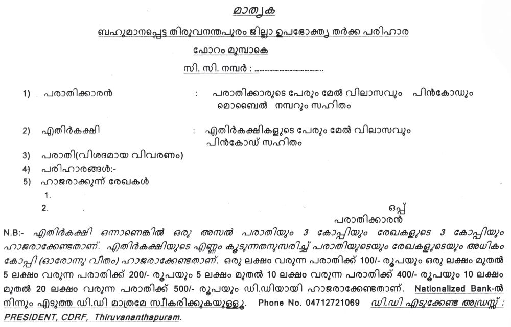

ചിത്രത്മƒ ശ്ര≤ിത്ഥൂ. നാം വിവിധ ആവശ്യത്മƒത്ഥായി ഇസ്ഥരം ÿാപനത്മളിൺ പോകാറു-≠-√ോ. ഏത് ആവശ്യസ്ഥി‚െ സഫലീക-രണ-സ്ഥിനാണ്
ഇവയോരോന്നും സμയ്യശിത്ഥുന്നതെന്ന് ചയ്യണ്ണചെയ്ത് എഴുതിനോത്ഥൂ.
$ ആഹാര-സ്ഥിനാവ-ശ്യമായ പണ്ണത്ഥറി വാത്മുന്നതിന്.
$ ചികി' ലഭിത്ഥുന്നതിന്.
$
$
180
ഉപഭോ-‡ാവ് : സംതൃപ്തിയും സംരക്ഷണവും
Page 93
Figure fig_ch05_p093_01 (Page 93)
ല്ലാ≥ഡേയ്യഡ് ത
നΩുടെ വിവിധ ആവശ്യത്മളുടെ പന്തിക തയാറാത്ഥിയാലോ?
ആഹാരം, വസ്ത്രം, പായ്യ∏ിടം, വിദ്യാഭ്യാസം, ആരോഗ്യം, വിനോദം
തുടത്മിയ അനേകം ആവശ്യത്മƒ ആധുനികമനുഷ്യന് ഉ≠െന്ന് വ്യ‡മായ-√ോ. ഇതിനായി സാധന-ത്മളും സേവന-ത്മളുമാണ√ോ നാം ഉപയോഗ-∏െടുസ്ഥുന്നത്. നാം ഉപയോഗ-∏െടുസ്ഥുന്ന സാധന-ത്മളും സേവന-ത്മളും
ഏതെ-√ാമാണെന്ന് ക≠െസ്ഥൂ.
നമുത്ഥാവ-ശ്യമായ എ√ാ സാധന-ത്മളും വില കൊടുസ്ഥാണോ ഉപയോഗിത്ഥുന്നത്? എ√ാ സേവന-ത്മƒത്ഥും പ്രതിഫലം നൺകേ-≠ിവ-രാറു≠ോ?
വെ≈-വും വായുവുമ-ടത്ഥം വില കൊടുസ്ഥ് ഉപയോഗിത്ഥേ-≠ിവ-രുന്ന സാഹചര്യമ√േ ഇന്നു-≈-ത്? അതി‚െ കാരണ-ത്മളെത്ഥുറിണ്ണ് ചിഗ്ലിണ്ണുനോത്ഥൂ.
$
വിഭവ-ത്മളുടെ ലഭ-്യതത്ഥുറവ്.
$
ആവശ-്യത്മളുടെ വയ്യധനവ്.
$
$
ഉപഭോഗം, ഉപഭോ-‡ാവ്
മനുഷ്യ‚െ ആവശ്യത്മƒ തൃപ്തി-∏െടുസ്ഥുന്നതിനായി സാധന-ത്മളും സേവനത്മളും ഉപയോഗ-∏െടുസ്ഥുന്നതിനെയാണ് ഉപഭോഗം എന്ന് പറയുന്നത്.
വിലകൊടുസ്ഥോ കൊടുത്ഥാമെന്ന കരാറിലോ ഏതെന്നിലും സാധനമോ
സേവനമോ വാത്മി ഉപയോഗിത്ഥുന്ന ആƒ ഉപഭോ-‡ാവാണ്. നΩുടെ
ആവ- ശ ്യ- ത്മ ƒ നിയ്യവ- ഹ ഇ- ത്ഥ ആ≥ മുഖ്യ- മ ആയും നാം ആശ്ര- യ ഇ- ത്ഥ ഉ- ന്ന ത്
വിൺ∏നകേμ്രത്മളെയും സേവന-കേ-μ്രത്മളെയുമാണ്. ഉൺ∏ാദ-നവും വിതരണവും ഉപഭോഗവും പരസ്പരം ബ'-∏െന്ത സാബ്ബസ്ഥികപ്രവയ്യസ്ഥന-ത്മളാണ്. എ√ാ സാബ്ബസ്ഥികപ്രവയ്യസ്ഥന-ത്മളും ഉപഭോ-‡ാത്ഥƒത്ഥ് വേ≠ിയാണ√ോ.
ഉപഭോ-‡ാവി‚െ സംതൃപ്തി
""നΩുടെ പരിസരം സμയ്യശിത്ഥുന്ന ഏ‰വും പ്രധാന-∏െന്ത
ആƒ ഉപഭോ-‡ാവാണ്. അദ്ദേഹം നΩെ ആശ്രയിത്ഥുകയ√; നാം അദ്ദേഹസ്ഥെ ആശ്രയിത്ഥുക-യാണ്. അദ്ദേഹം
നΩുടെ ജോലിത്ഥ് തട- -മ√; അതി‚െ ലക്ഷ്യമാണ്. അദ്ദേഹം
നΩുടെ ഇടപാടിൺ ഒരു അന്യന-√; അദ്ദേഹം അതി‚െ ഭാഗമാണ്. അദ്ദേഹ-സ്ഥിന് സേവനം നൺകുന്നതുവഴി നΩƒ
ഔദാര്യം ചെയ്തുകൊടുത്ഥുക-യ√ ചെøുന്നത്, സേവിത്ഥാനു≈ അവസരം ഒരുത്ഥിസ്ഥരുന്നതു വഴി അദ്ദേഹം നമുത്ഥ്
ഒരു ഔദാര്യം ചെയ്തു തരുകയാണ്.''
ഗാ'ിജി
ഉപഭോ-‡ാവ് : സംതൃപ്തിയും സംരക്ഷണവും
181
Page 94
Figure fig_ch05_p094_01 (Page 94)
സാമൂഹ്യശാസ്ത്രം കക
ഗാ'ിജിയുടെ വാത്ഥുകƒ ശ്ര≤ിണ്ണ-√ോ. ഇസ്ഥര-സ്ഥിലു≈ സമീപ-നമാണോ എ√ാ വിൺ∏നകേμ്രത്മളിൺനിന്നും സേവനകേμ്രത്മളിൺ
നിന്നും ഉപഭോ-‡ാത്ഥƒത്ഥ് ലഭിത്ഥുന്നത്? ചയ്യണ്ണചെøൂ.
നാം സാധന-ത്മƒ വാത്മുബ്ബോƒ ഒരേ സാധന-സ്ഥിന് വിവിധ കടക-ളിൺ
വ്യത-്യസ്ത വില നൺകേ-≠ിവ-രാറു-≠√ോ. ന്യായമായ വിലയ്ത്ഥ് സാധനത്മƒ ലഭിത്ഥണ-മെന്നാണ√ോ നാം ആഗ്രഹിത്ഥുന്നത്. സാധന-ത്മƒ വാത്മുബ്ബോഴും സേവന-ത്മƒ ഉപയോഗ-∏െടുസ്ഥുബ്ബോഴും മ‰െഗ്ലെ√ാമാണ് ഉപഭോ-‡ാവ് പ്രതീക്ഷിത്ഥുന്നത്?
$ ഗുണമേ∑
$ വിശ്വാസ്യത
$ വിൺ∏-നാന-ഗ്ലരസേവനം
$
$
ഈ അനുഭവം വായിത്ഥൂ.
അനുവും വിനുവും ജൂണിൺ സ്കൂളിൺ എസ്ഥിയത് പുതിയ കുടക-ളുമായിന്താണ്. ര≠ുപേരും സൂക്ഷിണ്ണ് ഉപയോഗിണ്ണിന്തും അനുവി‚െ കുട ര≠ാഴ്ച
കഴി-™-∏ോഴേത്ഥും തുറത്ഥാ≥ പ‰ാസ്ഥ വിധം തകരാറായി. വിനു ത‚െ
കുട വയ്യഷാവ-സാനം വരെ നന്നായി ഉപയോഗിണ്ണു.
മുകളിൺ കൊടുസ്ഥ അനുഭ-വസ്ഥിൺ സംതൃപ്തി ലഭിണ്ണത് ഏത് ഉപഭോ‡ാവിനാണ്? എഗ്ലുകൊ≠്?
ഇസ്ഥരം അനുഭ-വത്മƒ നിത്മളുടെ ജീവിത-സ്ഥിലും ഉ≠ാകാറി√േ? അവ
ക്ലാസിൺ പന്നുവയ്ത്ഥുക.
സാധന-ത്മളുടെയും സേവന-ത്മളുടെയും ഉപഭോഗസ്ഥി‚െ ഫലമായി ഉപഭോ-‡ാത്ഥളുടെ ആവശ്യത്മƒ സഫലീക-രിത്ഥുന്നതിനെയാണ് സംതൃപ്തി
എന്ന് പറയുന്നുത്.
കടയിൺനിന്നു വാത്മുന്ന ഭക്ഷണസാധ-നത്മƒ കഴിണ്ണ് അസുഖ-ത്മƒ പിടിപെന്തതുമായി ബ'-∏െന്ത പത്രവായ്യസ്ഥകƒ കാണാറു-≠-√ോ.
ഉപഭോ-‡ാത്ഥƒ ചൂഷണം ചെø-∏െടുകയോ കബളി-∏ിത്ഥ-∏െടുകയോ
ചെøുന്ന ഇസ്ഥരം സμയ്യഭത്മƒ നിരവ-ധിയാണ്.
$ ഗുണമേ-∑-യി-√ാസ്ഥ സാധന-ത്മƒ വിൺത്ഥുന്നത്.
$ മായം ചേയ്യത്ഥുന്നത്.
20 ലക്ഷം രൂപ വരെയു≈ ഉപഭോക് ത ഋതയ്യത്ഥ- ത്മ - ള ഇൺ ഉപഭോ- ‡ ആ- വ ഇ‚െ
പരാതി
സ്വീക- ര ഇ- ണ്ണ ് തെളി- എവ- ട ഉ∏്
നടസ്ഥി തീയ്യ∏ുകൺ∏ിത്ഥുന്നു.
20 ലക്ഷം രൂപയ്ത്ഥ് മുകളിൺ
ഒരു കോടി വരെയു≈ തയ്യത്ഥത്മളിൺ തീയ്യ∏് കൺ∏ിത്ഥുന്നു.
ഒരു കോടി രൂപയ്ത്ഥുമുകളിൺ
നഷ്ടപ-രിഹാരം ആവശ്യ-∏െടുന്ന തയ്യത്ഥത്മളിൺ തീയ്യ∏ു
കൺ∏ിത്ഥുന്നു.
ഉപഭോ-‡ാവ് : സംതൃപ്തിയും സംരക്ഷണവും
Page 97
Figure fig_ch05_p097_01 (Page 97)

Figure fig_ch05_p097_02 (Page 97)
ല്ലാ≥ഡേയ്യഡ് ത
സാധാ- ര ണ കോടതി നട- പ - ട ഇ- ്രക- മ - ത്മ - ള ഇൺനിന്ന് വ്യത്യ- സ ് ത - മ ആണ് ഉപഭോക്തൃകോടതിക-ളുടെ നടപടിക്രമത്മƒ. ഉപഭോക്തൃകോടതിക-ളുടെ
പ്രധാന സവിശേഷ-തകƒ ഇവയാണ്:
$ നടപടിക്രമത്മ-ƒ ലളിതമാണ്.
$ അതിവേഗം നീതി ഉറ∏ുവരുസ്ഥുന്നു.
$ വ്യവഹാരണ്ണെലവ് വളരെ കുറവാണ്.
ഉപഭോ-‡ാവിനു-≠ാവുന്ന കഷ്ടനഷ്ടത്മƒ കോടതിയെ ധരി-∏ിത്ഥുന്നതിന്
പരാതി വെ≈-ത്ഥട-ലാസിൺ ലളിത-മായി എഴുതി സമയ്യ∏ിണ്ണാൺ മതി. പരാതിത്ഥാര≥ ആവശ്യ-∏െടുന്ന നഷ്ടപ-രിഹാര-സ്ഥി‚െ മൂല്യമ-നുസ-രിണ്ണ് കുറ™
ഫീസ് ഈടാത്ഥുന്നു-≠്.
സാധന-ത്മളുടെയും ÿാപന-ത്മളുടെയും നിലവാരം വിലയിരുസ്ഥി അതി‚െ
അടി-ÿാന-സ്ഥിൺ ചില ചി"-ത്മƒ നൺകിവ-രുന്നു-≠്. സാധന-ത്മളുടെയും
ÿാപന-ത്മളുടെയും ഗുണമേ∑ ഉറ∏ുവരുസ്ഥാ≥ ഉപഭോ-‡ാവിനെ ഈ
ചി"-ത്മƒ സഹായിത്ഥുന്നു. അവയിൺ ചിലത് നോത്ഥൂ.
$ ബ്യൂറോ ഓഫ് ഇഗ്ല്യ≥ ല്ലാ≥ഡേയ്യഡ് (ആകട) ഉൺ∏-ന്നത്മളുടെ
നി›ിത ഗുണനില-വാരം ഉറ-∏ാത്ഥുന്നതിന് കടക മുദ്ര നൺകുന്നു.
വൈദ്യുത ഉപക-രണ-ത്മƒ, സിമ‚ ്, പേ∏യ്യ, പെയി‚ ്, ഗ്യാസ് സിലി≠യ്യ തുടത്മിയ ഉൺ∏-ന്നത്മളിൺ ഈ ചി"ം കാണാം.
$ ഇ‚യ്യനാഷണൺ ഓയ്യഗനൈസേഷ≥ ഫോയ്യ ല്ലാ≥ഡേയ്യഡൈസേഷ≥ (കടഛ) ഇഗ്ല്യയ-ടത്ഥം നൂ‰ിയിരുപ-തില-ധികം -രാഷ-്ട്രത്മളിലെ
സാധന-ത്മളുടെയും സേവന-ത്മളുടെയും ഗുണമേ∑ സാക്ഷ്യ-∏െടുസ്ഥുന്നു.
ആശുപ-ത്രിക-ƒ, ബാന്നുകƒ, മുതലായ സേവനÿാപന-ത്മƒത്ഥും
നിരവധി ഉൺ∏-ന്നത്മ-ƒത്ഥും എെ. എസ.് ഒ. അംഗീകാരം നൺകുന്നു.
$ സ്വയ്യണാഭ-രണ-ത്മളുടെ പരിശു≤ി സൂചി-∏ിത്ഥുന്നു.
$ -ഇലക്ട്രോണിക്, ഇലക്ട്രിത്ഥൺ, ഉപക-രണത്മളുടെ സുരക്ഷ സാക്ഷ്യ∏െടുസ്ഥുന്നതിന് ഈ ചിഹ്നം അഗ്ലയ്യദേശീയ-മായി ഉപയോഗിത്ഥുന്നു.
-$ ശരിയായ തിര-™െടുത്ഥലിന് പ്രാപ്തി നേടുന്നു.
$ അവകാശബോധമു≈ ഉപഭോ-‡ാവായി മാറുന്നു.
-$ ഉപഭോക്തൃപ്രശ്നത്മളിൺ ഇടപെടാ≥ ശേഷി നേടുന്നു.
ഉപഭോക്തൃവിദ-്യാഭ-്യാസം നൺകുന്നതി‚െ ഫലമായി രൂപ-∏െടുന്ന ഉപഭോക്തൃശീല-ത്മƒ ഏതൊത്ഥെയാണെന്ന് ശ്ര≤ിത്ഥൂ.
$ സാധനത്മƒ വാത്മുബ്ബോƒ ബി√് ചോദിണ്ണ് വാത്മുക.
$ അളവും തൂത്ഥവും ശരിയാണെന്ന് ബോധ്യ-∏െടുക.
$ പാത്ഥ് ചെയ്ത സാധന-ത്മƒ വാത്മുബ്ബോƒ ഉൺ∏-ന്നസ്ഥി‚െ പേര്,
പാത്ഥ് ചെയ്ത തീയതി, കാലാവ-ധി, തൂത്ഥം, വില, നിയ്യമാതാവി‚െ/
വിതര-ണത്ഥാരുടെ മേൺവിലാസം എന്നിവ ഉ≠െന്ന് ഉറ∏ുവരുസ്ഥുക.
$ സാധന-ത്മളുടെ നിലവാരം സൂചി-∏ിത്ഥുന്ന ചി"-ത്മƒ ശ്ര≤ിത്ഥുക.
$ വാത്മുന്ന സാധനത്മളുടെ ഉപയോഗ-ക്രമം, പ്രവയ്യസ്ഥി-∏ിത്ഥുന്ന വിധം
എന്നിവ മന- ഇലാത്ഥുക.
ശരിയായ ഉപഭോക്തൃശീലത്മƒ ഉƒത്ഥൊ-≈ിണ്ണ് ഉപഭോക്തൃബോധവൺത്ഥര-ണസ്ഥിനായി ഒരു ചുമയ്യപത്രിക തയാറാത്ഥുക.
ഉപഭോക്തൃവിദ്യാഭ്യാസ-സ്ഥി‚െ പ്രാധാന്യം വ്യ‡-മാത്ഥി
കുറി∏ു തയാറാത്ഥുക.
സയ്യത്ഥാരുകളുടെയും സയ്യത്ഥാരിതരസംവിധാന-ത്മളുടെയും സമൂഹ-സ്ഥി‚െയും കൂന്തായ ശ്രമത്മളിലൂടെ മാത്രമേ സഗ്ലുഷ്ടമായ ഒരു ഉപഭോക്തൃസമൂഹസ്ഥെ സൃഷ്ടിത്ഥാ≥ കഴിയൂ.
വിലയിരുസ്ഥാം
$
"ഉപഭോ-‡ാവി‚െ സംതൃപ്തിയാണ് എ√ാ സാബ്ബസ്ഥികപ്രവയ്യസ്ഥനത്മളുടെയും പ്രധാന ലക്ഷ്യം.' ഈ പ്രസ്താവ-നയോട് നിത്മƒ
യോജിത്ഥുന്നു≠ോ? എഗ്ലുകൊ≠്?